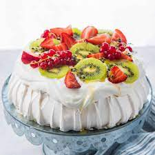

Pavlova - Only From New Zealand

Australians try to claim it, but unfortunately for then, they're wrong.
In you like meringues, you'll love this desert, best with golden kiwi fruit
Ingredients
- 6 egg whites (at room temperature)
- 2 cups Chelsea Caster Sugar (450g)
- 1 tsp vanilla essence
- 1 tsp white vinegar
- 2 tsp Edmonds Fielder's Cornflour
- 300ml Meadow Fresh Original Cream, whipped Fruit, to decorate
Steps
- Preheat oven to 110ºC bake (not fan bake). Line a baking tray with baking paper.
- In a large metal, ceramic or glass bowl (not plastic), beat the egg whites until soft peaks form.
- Continue beating while adding the caster cugar a quarter of a cup at a time. The mixture should get glossier and thicker with each addition and this should take at least 10 minutes. Beat in the vanilla, vinegar and cornflour.
- Spoon mixture out onto the prepared tray into a dinner plate sized mound.
- Bake for approximately 1 1/2 hours, until dry and crisp and it lifts easily off the baking paper. Turn the oven off and leave the pavlova for at least an hour before removing from the oven. Finish cooling on a wire rack, then transfer to an airtight container.
- When ready to serve, place on a serving plate, swirl the top with the whipped fresh cream and decorate with sliced or chopped fruit of your choice.
Tips
- Older eggs work better as the white breaks down easier.
- Wipe the bowl beforehand with lemon juice to remove any greasy residue before beating the egg whites (grease affects the ability for the egg whites to form peaks).
- Caster sugar is needed as the fine crystal size traps and holds air - more air is trapped because there are more crystals.
Return to Index